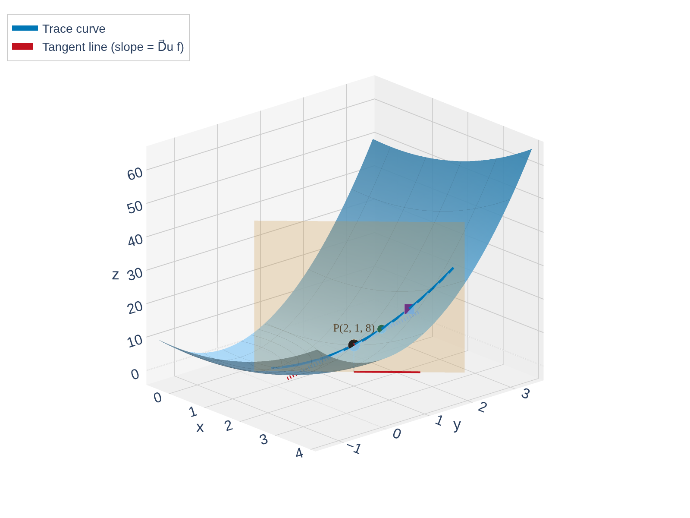
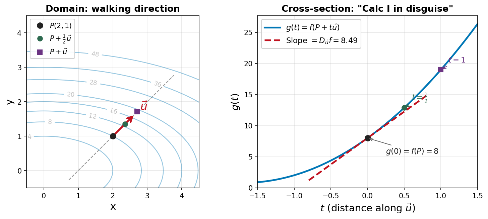

Section 14.6: Directional Derivatives and the Gradient Vector
Partial Derivatives
MTH 310
Calculus III
Directional Derivatives — Motivation


Definition of the Directional Derivative
Directional Derivative
Let \(\vec{u} = \langle a, b \rangle\) be a unit vector (\(|\vec{u}| = 1\)). The directional derivative of \(f\) at \((x,y)\) in the direction of \(\vec{u}\) is:
\[D_{\vec{u}} f(x,y) = \lim_{t \to 0} \frac{f(x + ta,\; y + tb) - f(x,y)}{t}\]
provided this limit exists.
Example 1: \(D_{\vec{u}} f\) from the Definition
Example 1
Let \(f(x,y) = x^2 + 4y^2\) and \(\vec{u} = \left\langle \frac{\sqrt{2}}{2},\; \frac{\sqrt{2}}{2} \right\rangle\).
Find \(D_{\vec{u}} f(2, 1)\) using the limit definition.
The Gradient Vector
Gradient Vector
If \(f\) has partial derivatives \(f_x\) and \(f_y\), the gradient of \(f\) is the vector:
\[\nabla f(x,y) = \langle f_x(x,y),\; f_y(x,y) \rangle = f_x\,\vec{i} + f_y\,\vec{j}\]
The symbol \(\nabla\) is called nabla or del.
Example 2
Find \(\nabla f\) for \(f(x,y) = x^2 + 4y^2\). Then evaluate \(\nabla f(2,1)\).
The Big Theorem: \(D_{\vec{u}} f = \nabla f \cdot \vec{u}\)
Theorem: Directional Derivative via the Gradient
If \(f\) is a differentiable function of \(x\) and \(y\), then:
\[D_{\vec{u}} f(x,y) = \nabla f(x,y) \cdot \vec{u}\]
for any unit vector \(\vec{u}\).
Example 3: \(D_{\vec{u}} f\) via the Gradient
Example 3
Same problem as Example 1: \(f(x,y) = x^2 + 4y^2\), \(\vec{u} = \left\langle \frac{\sqrt{2}}{2},\; \frac{\sqrt{2}}{2} \right\rangle\).
Find \(D_{\vec{u}} f(2,1)\) using the gradient.
Maximizing the Directional Derivative
![Interactive contour plot of f(x,y) = x-squared + 4y-squared with elliptical level curves. A fixed blue gradient vector nabla-f = (4,8) is shown at the point P(2,1). A green/red unit vector u rotates as the slider sweeps theta from 0 to 360 degrees. The directional derivative value is displayed and color-coded: green when positive (f increasing), red when negative (f decreasing), gray near zero (moving along a level curve). The maximum occurs when u aligns with the gradient, the minimum when u opposes it, and zero when u is perpendicular to the gradient.](figures/directional_derivative_explorer.png)
Example 4: Fastest Increase and Decrease
Example 4
For \(f(x,y) = x^2 + 4y^2\) at the point \((2,1)\):
(a) What direction gives the fastest increase in \(f\)? How fast?
(b) What direction gives the fastest decrease?
(c) In what directions is \(D_{\vec{u}} f = 0\)?
Example 5: Which Way Should I Walk?
Example 5
A hiker is at position \((2, 1)\) on a mountain whose elevation is modeled by \(f(x,y) = x^2 + 4y^2\) (hundreds of feet).
(a) She wants to descend as steeply as possible. What direction should she walk?
(b) She wants to stay at the same elevation (walk along a contour line). What direction(s) should she walk?
Your Turn: Directional Derivative Practice
Example 6
Let \(f(x,y) = xe^{-y}\) and let \(\vec{u}\) be the unit vector in the direction of \(\langle 2, -1 \rangle\).
(a) Find \(\nabla f(2, 0)\).
(b) Find \(D_{\vec{u}} f(2, 0)\).
(c) What is the maximum rate of change of \(f\) at \((2, 0)\)?
Gradient Is Perpendicular to Level Curves
Theorem: Gradient Perpendicular to Level Curves
The gradient vector \(\nabla f(a,b)\) is perpendicular to the level curve \(f(x,y) = k\) at the point \((a,b)\).
Example 7: Tangent Line to a Level Curve
Example 7
Consider \(f(x,y) = x^2 + 4y^2\) with level curves that are ellipses.
At the point \((2, 1)\), find the equation of the tangent line to the level curve \(f(x,y) = 8\).
Extending to Three Variables
Gradient in Three Variables
\[\nabla f(x,y,z) = \langle f_x,\; f_y,\; f_z \rangle\]
Example 8: Tangent Plane to a Level Surface
Example 8
Let \(F(x,y,z) = zx^2 - yz^2\).
(a) Compute \(\nabla F(1, 2, 3)\).
(b) Find the equation of the tangent plane to the level surface \(F(x,y,z) = -15\) at the point \((1, 2, 3)\).